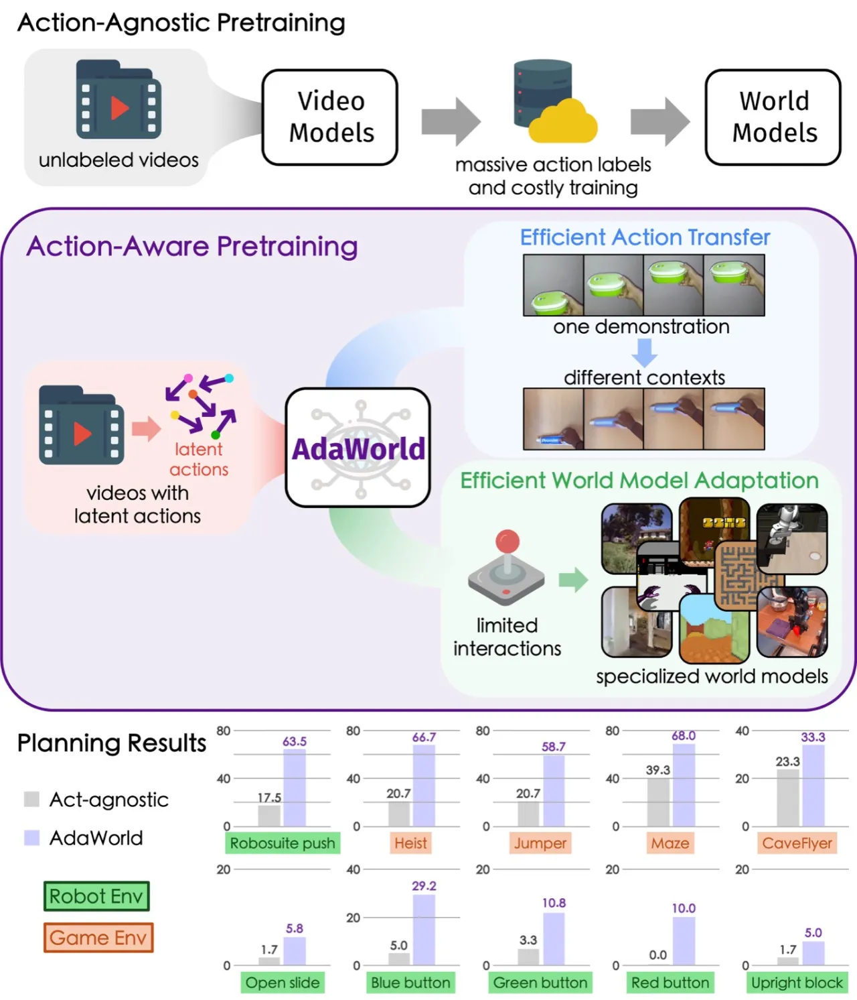
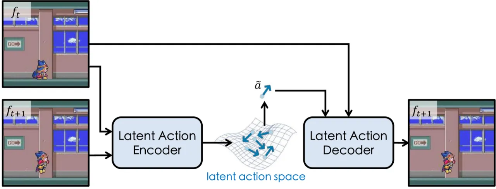
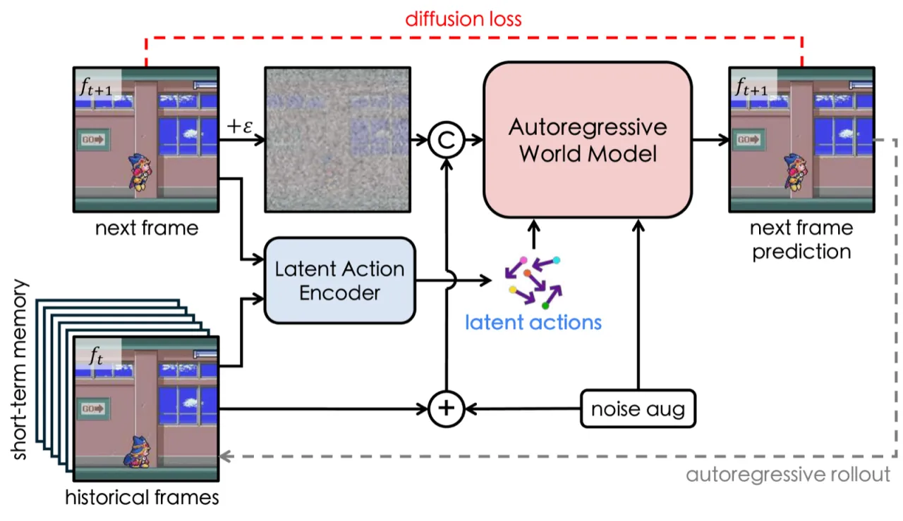
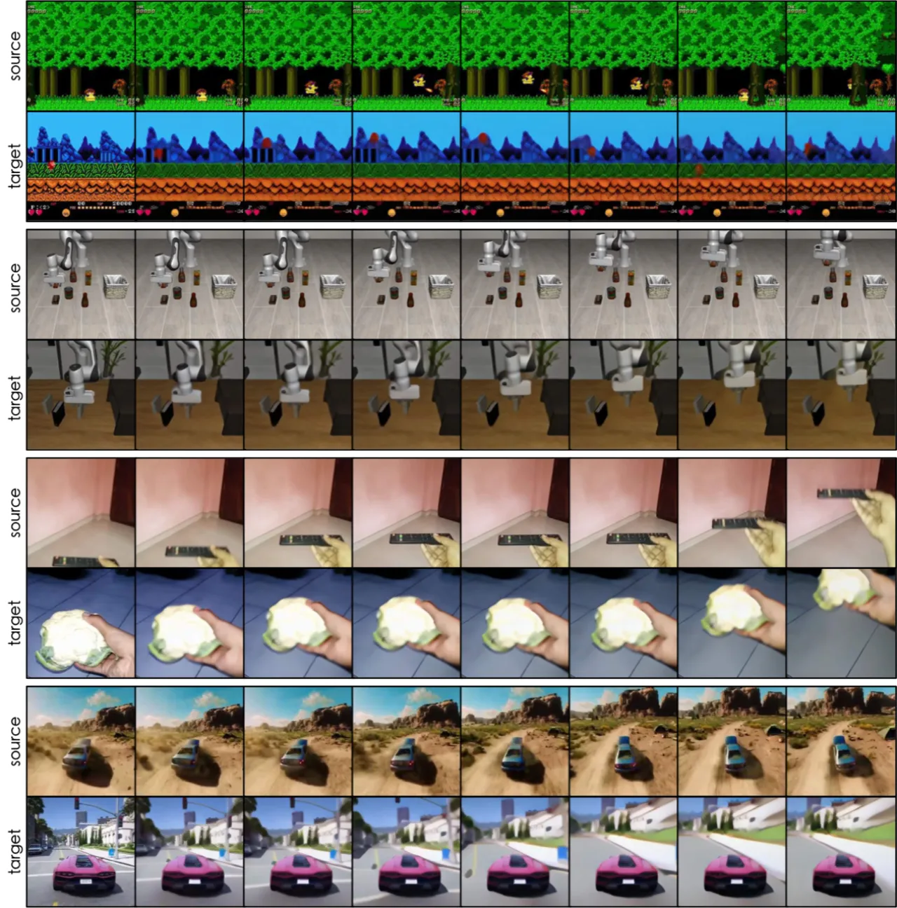
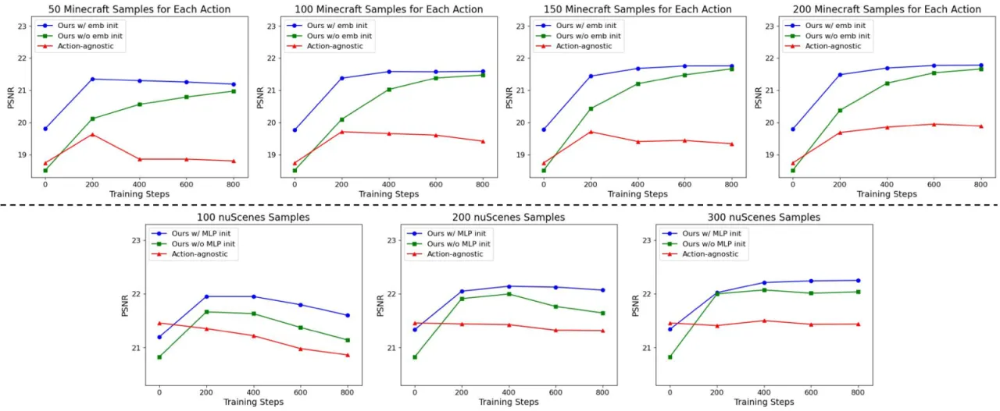

现有世界模型严重依赖带有动作标注的大量数据，面对新环境时适应成本极高。AdaWorld 提出以自监督方式从无标注视频中提取 latent action，并以此为条件预训练一个自回归世界模型，使模型能够在极少交互数据下快速迁移至新环境，同时支持无需额外训练的跨场景 action transfer 与语义连续的 action composition。
世界模型（world model）旨在学习由动作控制的未来帧预测，是构建智能 agent 的核心组件。然而，绝大多数现有方法严重依赖大量动作标注数据和高昂的训练成本，难以通过有限交互适应异构动作空间的新环境，极大限制了其跨域可用性。
"most existing world models rely heavily on substantial action-labeled data and costly training, making it challenging to adapt to novel environments with heterogeneous actions through limited interactions."

AdaWorld 的核心思路是：在预训练阶段就将动作信息注入世界模型——通过 latent action autoencoder 从无标注视频中自监督提取 latent action，再以这些 latent action 为条件预训练一个基于扩散的自回归世界模型。推理时可无训练迁移、少样本 fine-tune 或 MLP 映射等多种方式适应新环境。

𝓛 = 𝓛_pred + β·KL，在表达力与解耦之间取得平衡。
直接将源视频中提取的 latent action 用于控制目标场景的世界模型，无需任何训练。由于 latent action 与上下文解耦，同一动作可无缝迁移到不同视觉场景。
对于离散动作空间：以每个动作对应的多条轨迹的 latent action 平均值初始化控制接口，再少量 fine-tune；对于连续动作空间：用 MLP 将真实动作映射为 latent action 空间后 fine-tune，均仅需极少标注样本与步数。

实验跨多个领域展开：Action Transfer 评估（LIBERO、Something-Something v2），世界模型适应质量（Habitat、Minecraft、DMLab、nuScenes，每类环境 800 步 fine-tune），以及 visual planning（4 个 Procgen 游戏 + VP² 机器人任务）。Baseline 包括：action-agnostic 预训练、flow conditioning、discrete conditioning，以及 Q-learning、ground truth simulator。
| 方法 | LIBERO FVD ↓ | LIBERO Human ↑ | SSv2 FVD ↓ | SSv2 Human ↑ |
|---|---|---|---|---|
| Act-agnostic | 1545.2 | 0% | 847.2 | 1% |
| Flow cond. | 1409.5 | 2% | 702.8 | 10.5% |
| Discrete cond. | 1504.5 | 3.5% | 726.8 | 21.5% |
| AdaWorld | 767.0 | 70.5% | 473.4 | 61.5% |
AdaWorld 在 FVD 和人类评估成功率上均大幅领先所有 baseline，展现出极强的跨场景动作迁移能力。
| 方法 | Habitat PSNR ↑ | Habitat LPIPS ↓ | Minecraft PSNR ↑ | nuScenes PSNR ↑ |
|---|---|---|---|---|
| Act-agnostic | 20.34 | 0.450 | 19.44 | 20.86 |
| Flow cond. | 22.49 | 0.373 | 20.71 | 20.94 |
| Discrete cond. | 23.31 | 0.342 | 21.33 | 21.28 |
| AdaWorld | 23.58 | 0.327 | 21.59 | 21.60 |

| 方法 | Heist | Jumper | Maze | CaveFlyer | 平均 |
|---|---|---|---|---|---|
| Random | 19.33% | 22.00% | 41.33% | 22.00% | 26.17% |
| Act-agnostic | 20.67% | 20.67% | 39.33% | 23.33% | 26.00% |
| AdaWorld w/o FT | 38.67% | 68.00% | 41.33% | 31.33% | 44.83% |
| AdaWorld w/ FT | 66.67% | 58.67% | 68.00% | 33.33% | 56.67% |
即使不经 fine-tune，AdaWorld 平均成功率（44.83%）也已显著超过 Q-learning（27.17%）和 action-agnostic 方法（26.00%）。机器人任务聚合归一化成功率：AdaWorld 21.54，action-agnostic baseline 仅 5.03。
数据多样性消融（Table 5）表明，增加训练数据多样性能显著提升 latent action 对新领域的泛化能力。架构泛化性消融（Table 6）表明，将动作感知预训练应用于 iVideoGPT 同样大幅提升其适应性，验证了该方法的通用性。UMAP 可视化（Figure 7）显示，较小的 β 值增强表达力但牺牲了与上下文的解耦程度。
"it does not operate at real-time frequency." 未来可通过蒸馏（distillation）与加速采样技术改善推理速度。
"AdaWorld struggles to create novel content when the rollout exceeds the initial scene." 作者认为该问题可通过扩大模型规模与训练数据解决。
"our model falls short in achieving extremely long-term rollouts, and we will explore potential solutions in future work."
作者在附录中列举了部分主要失败案例（"We also append some primary failure cases"），但论文主体未作详细讨论。